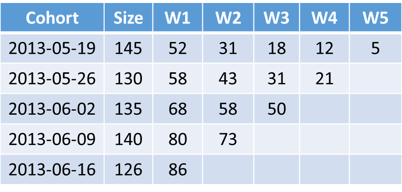
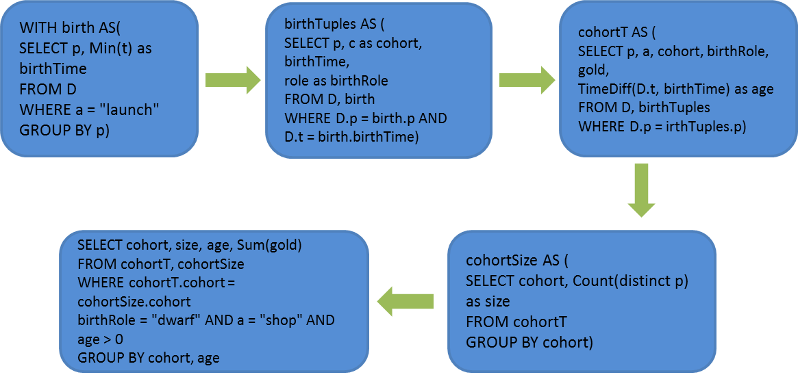
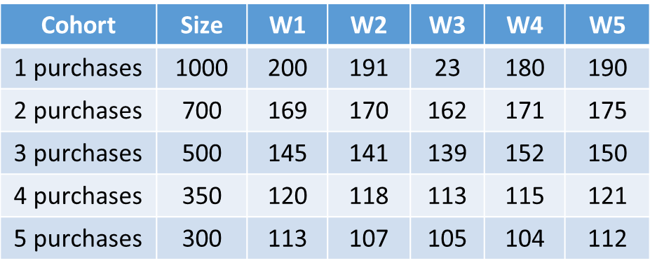
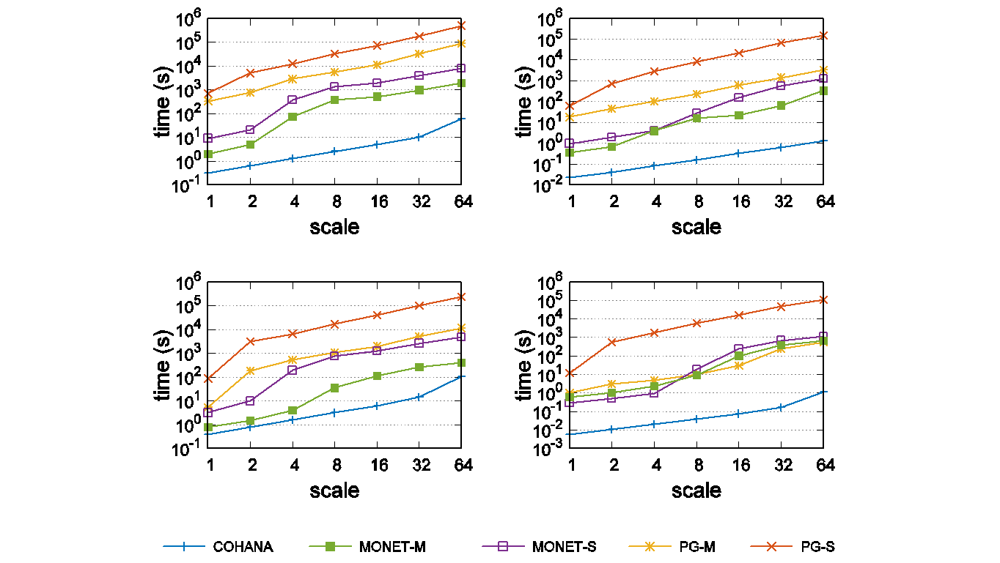
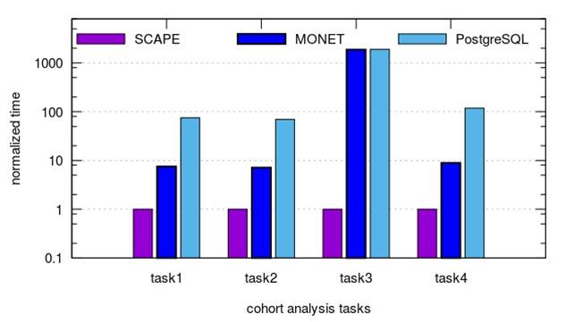
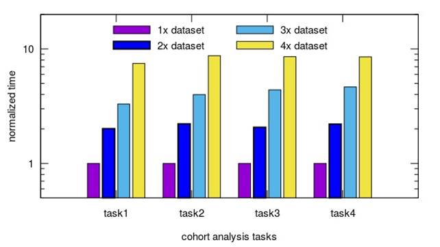

Cohort Query Processing
Part I: Cohort Analysis
Traditional Cohort Analysis
## An example
- Retention analysis
- Cohort by birth time
- Age by week
- Compute retention

## SQL-based approach example

Generalized Cohort Analysis
## Generalized cohort analysis example 1
- Birth sequence: a certain number of purchase event
- Age by week
- Retention is computed for cohorts consisting of users who having performed a certain number of purchases

## Generalized cohort analysis example 2
- An empty birth sequence
- Age by the number of purchases performed
- Compute the average time duration between the current purchase and the last one
Cohort Query Processing
Part II: Shentilium solution
## SCAPE Performance:
## Traditional Cohort Query

- Q1: For each country launch cohort, report the number of retained users who did at least one action since they first launched the game.
- Q2: For each country launch cohort born in a specific date range, report the number of retained users who did at least one action since they first launched the game.
- Q3: For each country shop cohort, report the average gold they spent in shopping since they made the first shopped in the game.
- Q4: For each country shop cohort, report the average gold they spent in shopping in their birth country where they were born with respect to the dwarf role in a given date range.
## SCAPE Performance:
## General Cohort Query

- Result
- Scape is up to three order faster than database approaches, which have been adopted in almost all of our competitors
- For each user
- check whether it is qualified with respect to the birth sequence, and determine its host cohort
- determine the age for each activity performed thereafter
- select activities at each age to measure cohort behavior
- and finally update the result for that age
## SCAPE Performance:
## General Cohort Query

- Result
- Processing time is linear with the size of dataset, showing a high scalability
- For each user
- check whether it is qualified with respect to the birth sequence, and determine its host cohort
- determine the age for each activity performed thereafter
- select activities at each age to measure cohort behavior
- and finally update the result for that age